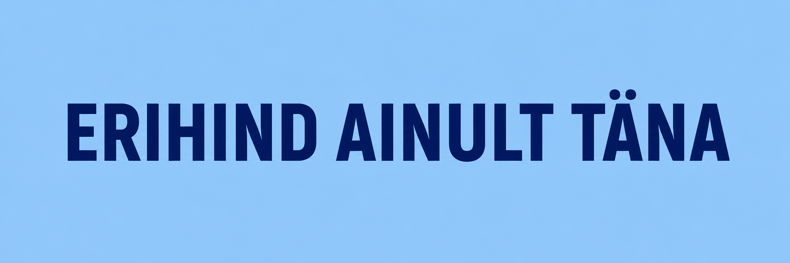

Kuidas seda kasutada?
Iga plokk sisaldab head ja halba näidet. Kõik plokid on vaikimisi avatud, et automaatsed tööriistad näeksid võimalikult palju testitavat sisu.
Mõne leheülese kriteeriumi puhul on kasutatud iframe-näidet, sest ühel HTML-lehel ei saa korraga
olla nii korrektne kui vigane näide.
1. Tajutavus
1.1.1 Mittetekstiline sisu


Dekoratiivpildil on tühi alt-atribuut.
Pildil puudub alt-atribuut.
1.3.1 Teave ja seosed
| Päev | Aeg |
|---|---|
| Esmaspäev | 09:00–17:00 |
| Päev | Aeg |
| Esmaspäev | 09:00–17:00 |
Silt, väljarühma seos ja tabeli päised puuduvad või on semantika eemaldatud.
1.3.2 Tähenduslik järjestus
1. Samm
Vali teenus.
2. Samm
Sisesta andmed.
Visuaalne järjekord ja DOM-i järjekord kattuvad.
2. Samm
HTML-is esimene, aga visuaalselt teine.
1. Samm
HTML-is teine, aga visuaalselt esimene.
CSS order muudab nähtavat järjekorda, kuid ekraaniluger loeb DOM-i järjekorras.
1.3.5 Sisestuse eesmärgi tuvastamine
Sisendite eesmärk on programmiliselt määratav sobivate
autocomplete-atribuutide abil.
Väljade eesmärk on nähtav, kuid programmiliselt pole sobivate
autocomplete-väärtustega määratud.
1.4.3 Kontrastsus (miinimumnõue)
Selle teksti kontrastsus on piisav.
Selle teksti kontrastsus on liiga nõrk.
1.4.4 Teksti suuruse muutmine
Teksti suurendamisel 200%-ni jääb kogu sisu nähtavaks.
Paindlik tekstiplokk
See plokk võib kõrguses kasvada. Kui tekst suureneb, jääb kogu sisu nähtavaks ja loetavaks.
Fikseeritud kõrgus ja overflow: hidden lõikavad suurendatud teksti ära.
Piiratud plokk
Tavatekst mahub siia veel ära, kuid teksti suurendamisel lõigatakse osa sisust nähtavalt ära.
1.4.5 Pildivormingus tekst
Erihind ainult täna
Tekst on päris tekstina, seega seda saab suurendada ja kohandada.

Tekst on pildi sees. Alt-tekst aitab mõista sisu, kuid tekst ise ei ole kasutaja jaoks päris tekstina kohandatav.
1.4.10 Ümberpaigutus
Kitsas vaateaken: kaardid liiguvad üksteise alla.
Kitsas vaateaken: fikseeritud laiusega plokid tekitavad horisontaalse kerimise.
1.4.11 Mittetekstilise sisu kontrastsus
Nupu piir ja ikoon eristuvad taustast piisavalt.
Nupu piir ja ikoon ei eristu taustast piisavalt.
1.4.12 Teksti vahekaugus
Tekst jääb loetavaks ka siis, kui reavahe, sõnavahe ja tähevahe suurenevad.
Kui tekstivahed suurenevad, võib fikseeritud kõrgusega kast osa tekstist ära lõigata ja muuta sisu raskesti loetavaks.
2. Kasutatavus
2.1.1 Klaviatuur
See näeb välja nagu nupp, kuid div ei ole vaikimisi klaviatuuriga kasutatav.
2.2.1 Ajalimiidi muudetavus
Teade aegub, kuid kasutaja saab aega pikendada või ajalimiidi välja lülitada.
Teade kaob kindla aja möödudes ja kasutaja ei saa seda peatada, pikendada ega välja lülitada.
2.2.2 Ajutine katkestamine, peatamine, peitmine
Liikuv tekst käivitub automaatselt, kuid kasutaja saab selle peatada ja uuesti käivitada.
Liikuv tekst käivitub automaatselt ja kasutaja ei saa seda peatada.
2.4.1 Sisuplokkide vahelejätmine
Lehe alguses on “Liigu põhisisu juurde” link ja põhisisu on märgitud main-elemendiga.
2.4.2 Lehe tiitel
Käesoleval lehel on kirjeldav title-element:
<title>WCAG 2.1 A ja AA testleht – automaatne ja hübriidne testimine</title>Pealkiri kirjeldab lehe eesmärki ja aitab kasutajal aru saada, millisel lehel ta asub.
Halb näide oleks tühi või liiga üldine lehe pealkiri:
<title></title><title>Avaleht</title>Selline pealkiri ei kirjelda piisavalt lehe sisu ega eesmärki.
2.4.3 Fookustamise järjekord
Fookus liigub loogilises järjekorras.
Positiivse tabindex-i tõttu on fookuse järjekord segane.
2.4.4 Lingi otstarve (kontekstis)
2.4.6 Pealkirjad ja sildid
Konto seadistused
Info
Pealkiri ja silt on liiga üldised.
2.5.3 Silt nimes
Visuaalne silt “Otsi” sisaldub ligipääsetavas nimes.
Visuaalne silt “Otsi” ei sisaldu ligipääsetavas nimes.
3. Arusaadavus
3.1.1 Lehekülje keel
Käesoleval lehel on lehe põhikeel määratud html-elemendil:
<html lang="et">Keele määramine võimaldab ekraanilugeritel ja teistel abitehnoloogiatel valida õige häälduse ja keelepõhised reeglid.
Halb näide oleks leht, mille html-elemendil puudub lang-atribuut:
<html>Kui lehe põhikeel ei ole määratud, ei pruugi abitehnoloogiad sisu õiges keeles esitada.
3.1.2 Tekstiosade keel
Eestikeelses tekstis võib olla võõrkeelne osa: Terms and Conditions.
Eestikeelses tekstis on ingliskeelne osa märgenduseta: Terms and Conditions.
3.3.1 Vea tuvastamine
Vale
Viga on tähistatud, kuid kasutajale ei selgitata, mis on valesti.
3.3.2 Sildid või instruktsioonid
Sisesta 11 numbrit ilma tühikuteta.
Püsiv silt ja juhis puuduvad; ainult placeholder ei ole piisav.
4. Töökindlus
4.1.1 Korrektne märgistus
Unikaalsed ID-d ja korrektselt seostatud sildid.
Siin on tegelik topelt-ID probleem DOM-is.
Katkist pesastust ei ole siia lisatud, sest brauser parandab selle sageli automaatselt. Topelt-ID on siiski masinloetav probleem.
4.1.2 Nimi, roll, väärtus
Nimi, roll ja olek on programmiliselt määratavad ning olek muutub vajutamisel.
Nupp on visuaalselt tähistatud täheikooniga, kuid ikoon on abitehnoloogiate eest peidetud. Seetõttu puudub nupul ligipääsetav nimi. Lisaks ei ole lemmikuks märkimise olek programmiliselt määratud.
4.1.3 Olekuteated
Teade ilmub, kuid ekraanilugerile ei anta sellest automaatselt teada.